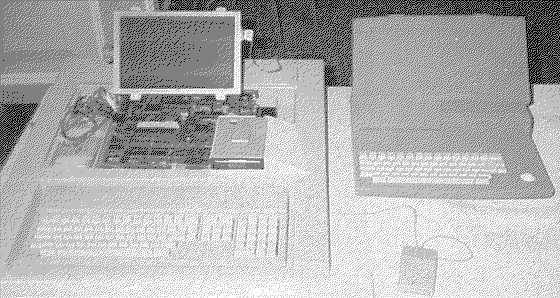

Previous
Next
TOC
Die STacy als Entwicklungsmuster
Dieses Bild zeigt das leere Gehäuse einer Stacy und einer bereits
verkleinertem MegaST Platine mit LC-Display ansteuerungseinheit, ba-
sierend auf dem SHADOW-Chip und dem dazugehörigen 32 Kilobyte großem
Ramchip.

Kapitel Die STacy als Entwicklungsmuster, Seite 1